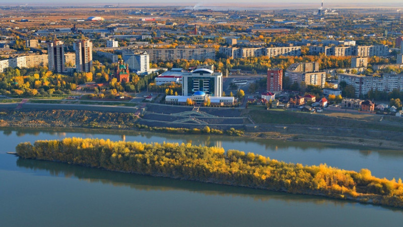
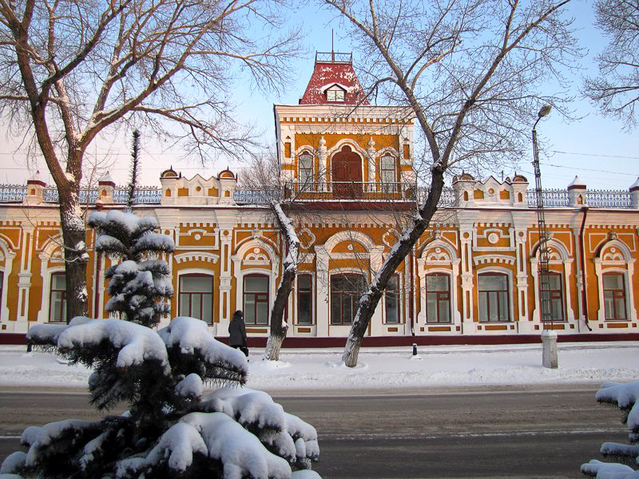
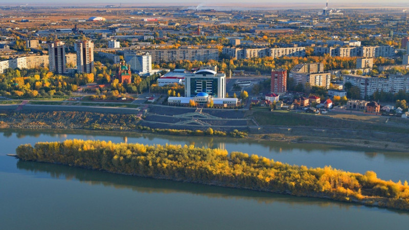
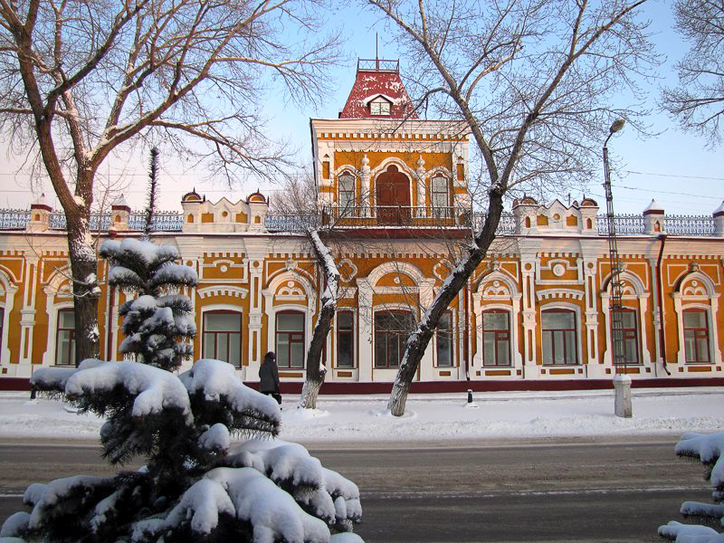
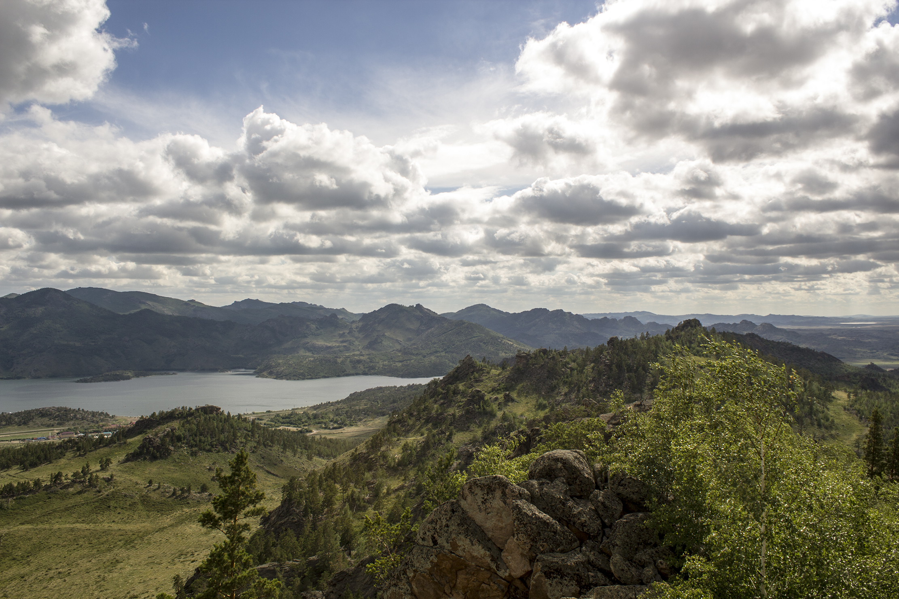
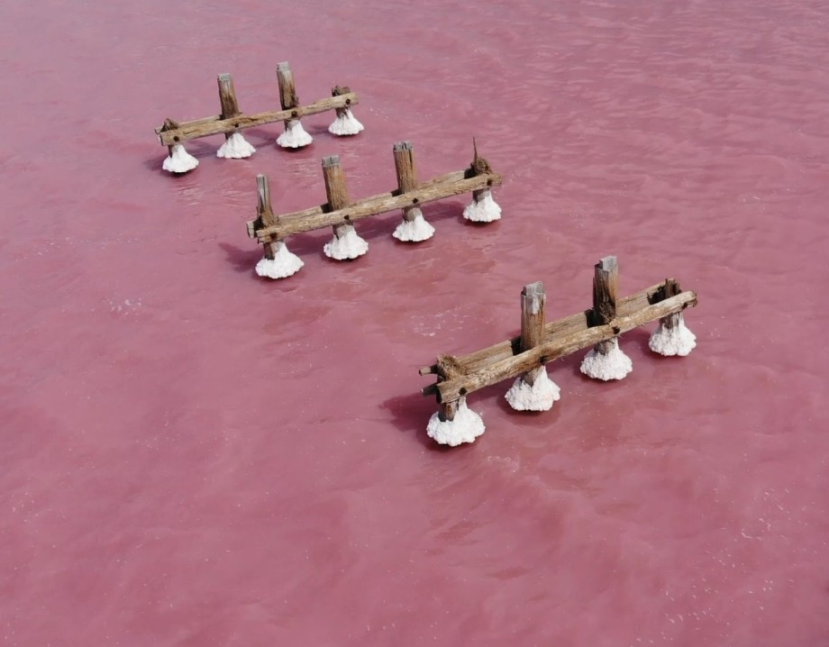
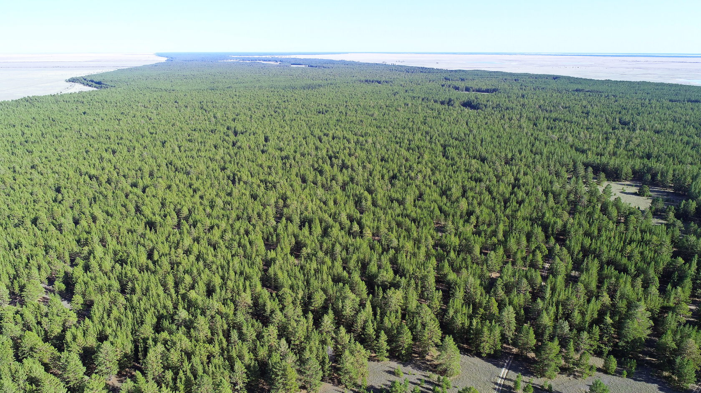

Travel to Pavlodar region
The Pavlodar region is not the place where you will find Ocean and Palmas. The city is about the history of Kazakhs that begins many centries ago. The place is motherland for many Kazakh intelligentsia.
The history
The history of Pavlodar region is really long.
Let's start with the city - Pavlodar. Some people make mistake when says, that Pavlodar was estimated in 1720. Because the place was not only a city, it was the capital of Kimak kaganat and the name was Khakan-Kimak that was estimated in IX century. Who knows maybe the city was even more centries ago. But the first mention was in IX century by Al-Idrisi.
The next is Bayanaul that has huge history. There were born many Kazakh batyrs, intelligentsia. There is no doubt why Bayanaul has many creative poeple. Just look at the pictures below


The interesting facts:
- You can find great memorials during Turik Kaganat
- The number of great people can go infinitely. The list: Kalkaman batyr, Olzhabay batyr, Malaisary Batyr, Zhasybai batur, Bayan Batyr, Bykhar Zhuray, Zhayay Musa, Kanysh Satbayev, Zhusipbek Aumoytov, Shaken Aimanov, Aibeken Bekturov, Halizhan Bekhozin, Sultanmahmut Toraigurov, Shapyk Shokin, Zhusipbek Aimyotov, Estai Bekimbayev, Maira Shamsutdinova, Alkei Margulan, Ermukhan Bekmahanov, Gregorii Potanin and others
- Pavlodar region has the own pink lake

Some pictures of Pavlodar City:
 



Top reasons of visiting Pavlodar:
- Bayanaul

- Koryakovka Lake

- Shaldai forest

The creator is Kabdrakhmanov Altair